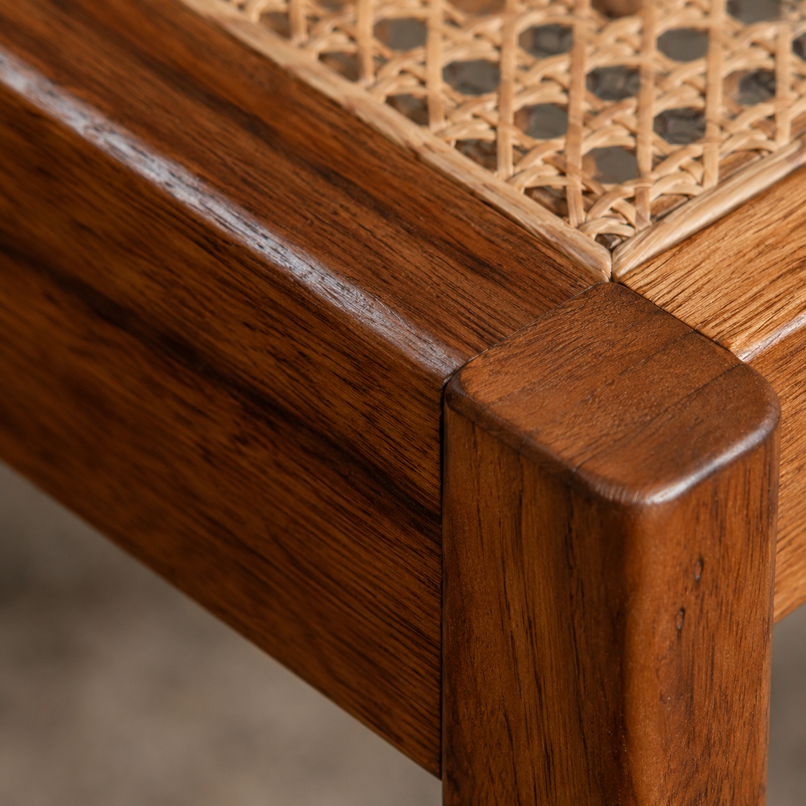

Paleta detectada en CSS
:root · --paper · --ink · --orange · --muted · --orange-bright · --teal · --cream · --line
Sistema visual · RAÍZ
La valija de herramientas del sitio: identidad, componentes y patrones reales reunidos en una sola página.
01 · Estilos core
La interfaz combina una base cálida y editorial con negro de alto contraste, acentos terracota y tipografía de gran presencia.
:root · --paper · --ink · --orange · --muted · --orange-bright · --teal · --cream · --line
Syne ExtraBold · 800
.brand-name · font-family: "Syne" · font-weight: 800
Academia de formación
Restauramos piezas con historia y las llevamos a una nueva vida contemporánea.
.eyebrow · p · font-family: "Raleway"
h1 · clamp(42px, 7vw, 82px) · 900 · line-height 0.98
h2 · clamp(36px, 5.2vw, 72px) · 900 · line-height 0.98
h3 · 22px · 900 · line-height 0.98
Texto de cuerpo con una medida cómoda, peso medio y un interlineado pensado para lectura clara.
p · 16px · 500 · line-height 1.5
02 · Interactivos
Muestras vivas de los controles presentes en el proyecto. Pasá el cursor o usá el teclado para probar los estados reales.
.button.button-accent · :hover · :focus-visible · :active · :disabled
.button-dark · .button-light · .button-accent
.restoration-copy > a
.contact-form · .contact-fields · input · textarea · button
 $110.000 ARS
Saber más
$110.000 ARS
Saber más
Caso destacado
/01De una pieza con desgaste a un mueble renovado que vuelve a ser parte del hogar.
Saber más
.course-card · .course-price · .course-cta · .result-case
03 · Base técnica
El proyecto está construido con tecnologías web nativas y una arquitectura directa, sin dependencias innecesarias.
Estructura semántica con header, nav, main, section, article, figure, form y footer.
Variables globales, Grid, Flexbox, clamp(), media queries, transiciones y animaciones en styles.css.
Interacciones, búsqueda, sliders, reveals, modales y accesibilidad sin frameworks, centralizados en script.js.
Raleway y Syne se cargan desde Google Fonts. No se detectaron Bootstrap, React, jQuery ni librerías de íconos.
Contenedores fluidos con clamp() y quiebres principales en 1120, 980 y 760 px.